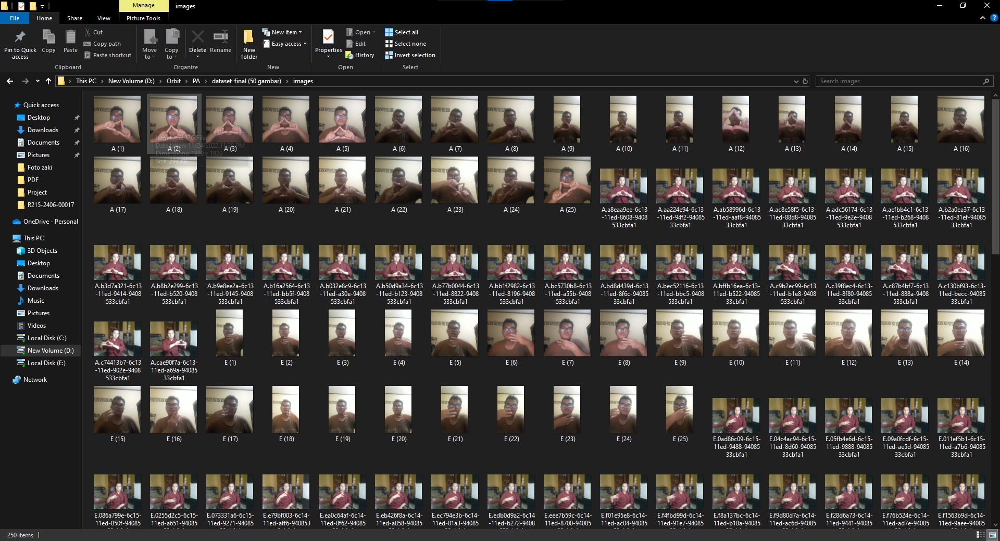

Kasya was developed as the final project of the MSIB AI Mastery Orbit Future Academy. Kasya's main goal is to produce a system that can translate Indonesian Sign Language (Bisindo) in real time and deploy the results on the web.
The project was completed by four people, each with their own responsibilities. I served as the AI Engineer responsible for developing a good AI model. Due to time and resource constraints, the system was limited to recognizing vowel alphabets from Bisindo. The AI model utilized for this purpose was the YOLO v5 model, known for its lightweight image recognition capabilities suitable for real-time use. Training data for the model consisted of fifty images for each alphabet.
Following the completion of the AI model, deployment was conducted utilizing a web platform with Flask as the connecting framework for the AI model. This web platform includes an explanation of Kasya and instructions for its use. Further development of the system to detect more letters and words is highly likely but would require additional time and more advanced devices to run it.
You can see the results of this project in the video, and I have also attached the code. If you have any further questions, feel free to contact me using the provided contact information.